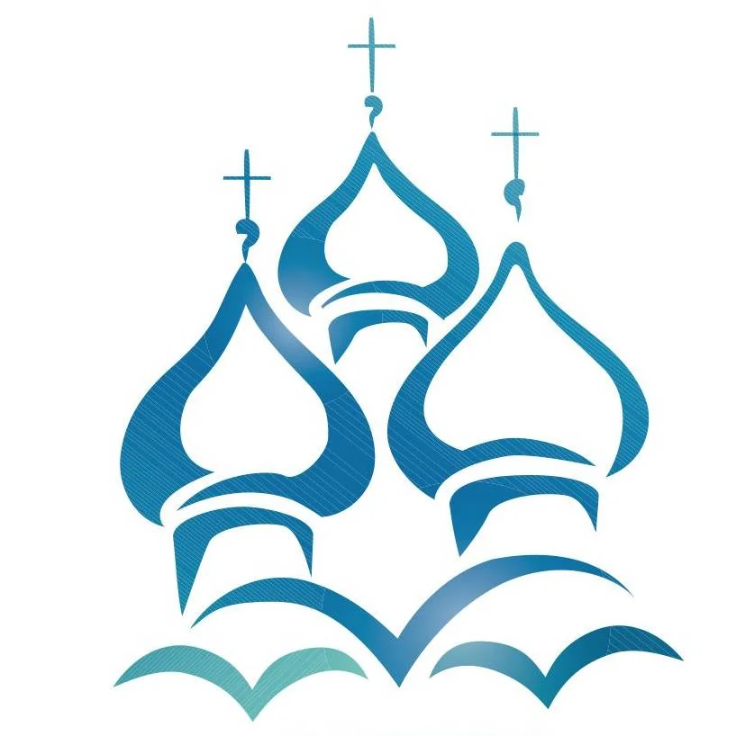

Настоятелям храмов РПЦ
Бесплатная программа
ПЧЕЛКА
Не имеет аналогов
Для составления расписаний Богослужений
всего за пару минут.
Неподвижный и подвижный круг Богослужений,
Пасхалия до 2050 года.
Два варианта расписаний,
просмотр вариантов:
Табличное расписание
Линейной расписание
Скачать программу "ПЧЕЛКА"